能力値
体力
▲
▼
敏捷
▲
▼
知力
▲
▼
精神
▲
▼
チェック
プリセット
旅歩きチェック
コンディション
移動
方向
野営
戦闘
イニシアティブ
命中チェック
短剣
剣
 槍
斧
弓
素手
素手（代用武器）
ダメージ・チェック
短剣
剣
槍
斧
弓
素手
素手（代用武器）
ダイス1
ダイス2
修正1
修正2
目標値
体力
敏捷
知力
精神
体力
敏捷
知力
精神
なし
≧
クリップボードにコピーしました。
コマンドをコピー
リセット